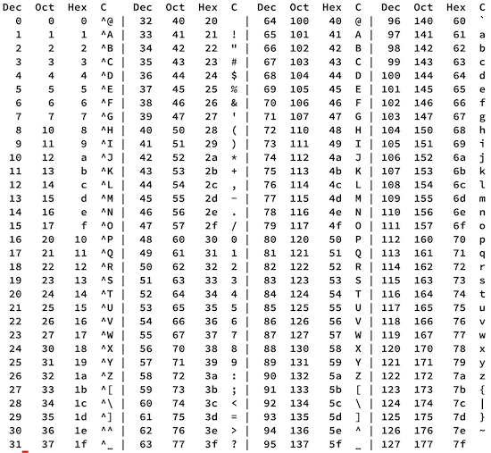

10 Cryptography Game Resources
The goal of the game is to design a cryptographic protocol for communication between your encryption and decryption teams, communicating solely via the ‘public-channel’. Scoring a point for each successfully transmitted message, and taking a point away from your rival team for each message your hackers can decipher.
10.1 Asymetric Encryption Tools (RSA)
Steps for implementing an RSA encryption scheme:
10.1.1 Key Gen (by recipient)
The goal is to compute a triple \((e, d, n=pq)\):
- Pick primes \(p, q\) such that \(n=pq > 127\), compute \(n\).
- Compute totient function \(\phi=(p-1)(q-1)\) and pick \(e<\phi\) such that \(e\) and \(\phi\) are coprime (i.e. \(\gcd(e, \phi)=1\)).
- Pick \(d\) such that \(de \equiv 1\mod\phi\).
- Send pair \((e, n)\) to sender.
10.1.2 Encryption and Decryption
For a given \(n\) character long message \(s=s_0\ldots s_n\), with characters \(\{s_i\}\), compute integer character representations \(\{m_i\}\) using ASCII table below.

m = , e = , n = , c =
c = , d = , n = , m =
10.2 Symmetric Encryption Tools
10.2.1 Ceasar Cipher
Shift:
10.2.2 Monoalphabetic Cipher
Use the following tool to encode or decode a monoalphabetic cipher text:10.2.3 Vigenère Cipher
Having decided on a key use the techniques you learnt earlier today to encode.
10.3 Hacking Tools
Here you will find collated all the tools required to break the ciphers.
10.3.1 Breaking RSA
To aid in cracking RSA we have provided you with a tool that computes the quotient and remainder for two given numbers, i.e. given numbers \(n\) and \(d\) it returns the corresponding \(q\) and \(r\) from the equation: \[\begin{equation*} n = q\cdot d + r \end{equation*}\] HINT: This will speed up finding \(p\) and \(q\) as well as the Euclidean algorithm!n = , d = , q = , r =
10.3.2 Caesar Cipher
Use the above tool for encoding the Caesar cipher, trying multiple different shifts.